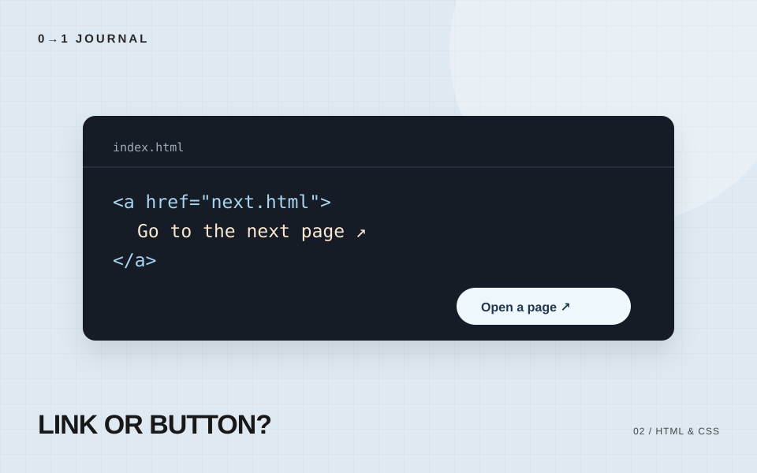
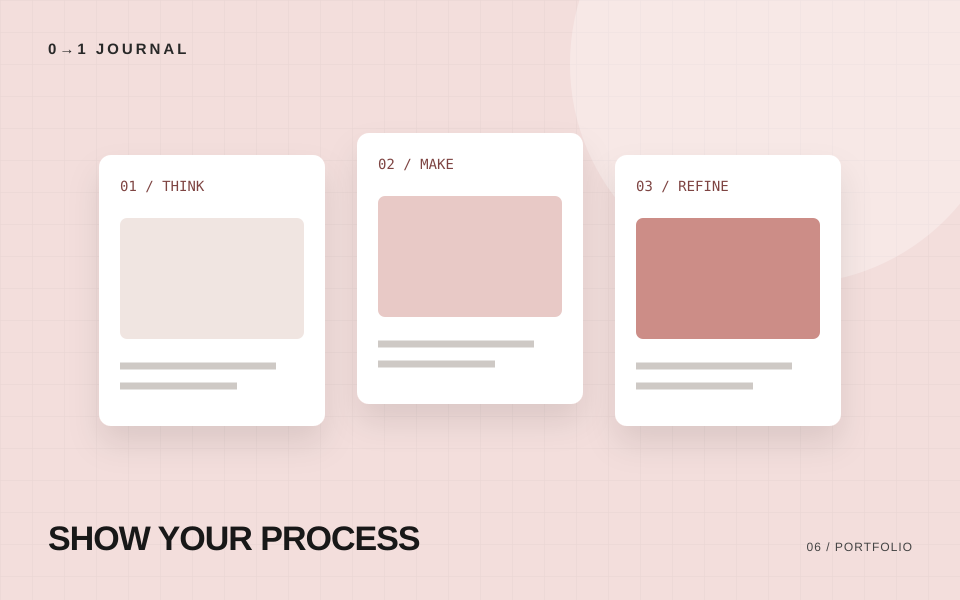
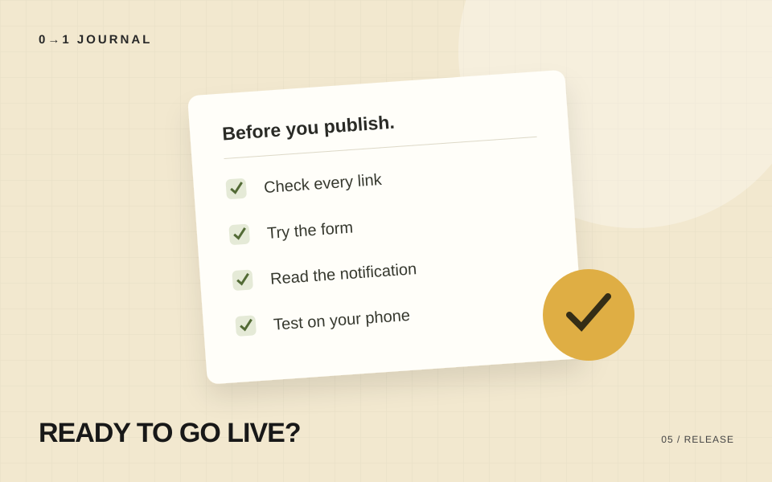
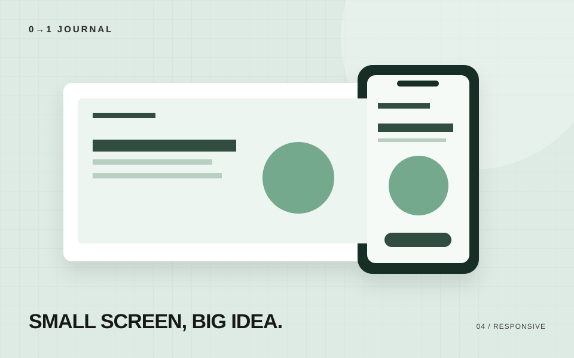

デザインに迷ったら、まず余白をそろえてみる
文字の大きさや装飾を増やす前に、情報のまとまりを余白で伝える。見出し・本文・カードの間隔を考える練習です。
#余白 #情報設計
LEARN. MAKE. PUBLISH.
ホームページ制作の「どうしよう」を、
一つずつ。学び方からデザイン、コード、
公開後のことまで。
FIRST STEP / はじめに読みたい
コードを書く前に、誰に何を伝えるサイトなのかを整理する。目的・読者・情報・導線・公開後の確認を、一つずつ考えます。
記事を読むLATEST NOTES
文字の大きさや装飾を増やす前に、情報のまとまりを余白で伝える。見出し・本文・カードの間隔を考える練習です。
コードを書く前に、誰に何を伝えるサイトなのかを整理する。目的・読者・情報・導線・公開後の確認を、一つずつ考えます。

ページを移動するならリンク、その場で操作するならボタン。迷いやすい使い分けを短いコード例で整理します。

誰の課題に、どんな判断で応えたのか。目的・担当範囲・改善の過程を伝える、作品紹介の書き方です。

表示できることと、使えることは別。リンク先、入力エラー、通知メールまで、公開前の確認項目をまとめました。

画面幅を狭くして終わりにしない。文字、画像、リンク、横スクロール、入力フォームを順番に確認します。
別のキーワードやカテゴリで探してみてください。